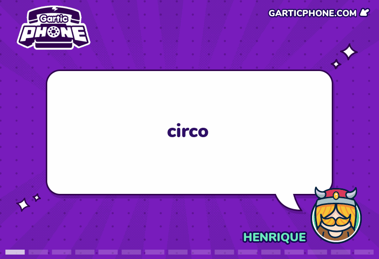
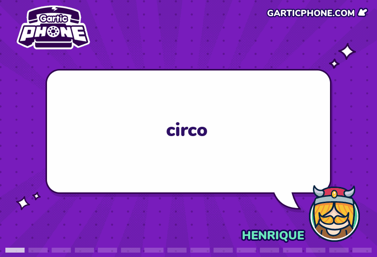

1Marcos 123456789Marcos 123456789Marcos 123456789Marcos 123456789Marcos 123456789Marcos 123456789Marcos 123456789Marcos 123456789Marcos 123456789Marcos Marcos 123456789Marcos 123456789Marcos 123456789Marcos 123456789Marcos 123456789Marcos 123456789Marcos 123456789Marcos 123456789Marcos 123456789Marcos 123456789Marcos 123456789Marcos 123456789Marcos 123456789Marcos 123456789Marcos 123456789Marcos 123456789Marcos 123456789Marcos 123456789Marcos 123456789Marcos 123456789Marcos 123456789Marcos 123456789Marcos 123456789Marcos 123456789Marcos 123456789Marcos 123456789Marcos 123456789Marcos 123456789Marcos 123456789Marcos 123456789 123456789Marcos 123456789Marcos 123456789Marcos 123456789Marcos 123456789Marcos 123456789Marcos 123456789Marcos 123456789Marcos 123456789Marcos 123456789Marcos 123456789
2PauloPauloPauloPauloPauloPauloPauloPauloPauloPauloPauloPauloPauloPauloPauloPauloPauloPauloPauloPauloPauloPauloPauloPauloPauloPauloPauloPauloPauloPauloPauloPauloPauloPauloPauloPauloPaulo PauloPauloPauloPauloPauloPauloPauloPauloPauloPauloPauloPauloPauloPauloPauloPauloPauloPauloPauloPauloPauloPauloPauloPauloPauloPauloPauloPauloPauloPauloPauloPauloPauloPauloPauloPauloPauloPauloPauloPauloPaulo PauloPauloPauloPauloPauloPauloPauloPauloPauloPauloPauloPauloPauloPauloPauloPauloPauloPauloPauloPauloPauloPauloPauloPauloPauloPauloPauloPauloPauloPauloPauloPauloPauloPauloPauloPauloPauloPaulo PauloPauloPauloPauloPauloPauloPauloPauloPauloPauloPauloPauloPauloPauloPauloPauloPauloPauloPauloPauloPauloPauloPauloPauloPauloPauloPauloPauloPauloPauloPauloPauloPauloPauloPauloPauloPauloPauloPauloPauloPaulo PauloPauloPauloPauloPauloPauloPauloPauloPauloPauloPauloPauloPauloPauloPauloPauloPauloPauloPauloPauloPauloPauloPauloPauloPauloPauloPauloPauloPauloPauloPauloPauloPauloPauloPauloPauloPaulo PauloPauloPauloPauloPauloPauloPauloPauloPauloPauloPauloPauloPauloPauloPauloPauloPauloPauloPauloPauloPauloPauloPauloPauloPauloPauloPauloPauloPaulo
3 Vitor O íbis-terrestre-de-reunião é uma espécie extinta de ave endêmica de Reunião, uma ilha no Oceano Índico a leste de Madagascar. Seus primeiros restos subfósseis foram encontrados em 1974, e a espécie foi descrita cientificamente pela primeira vez em 1987. Os "primos" viventes mais próximos são o íbis-sagrado, o íbis-sagrado-de-madagascar e o íbis-pescoço-de-palha. Relatos dos viajantes dos séculos XVII e XVIII descreveram uma ave branca em Reunião que voava com dificuldade e tinha hábitos solitários, sendo chamada de "solitário de Reunião". Em meados do século XIX, tais narrativas antigas foram interpretadas de maneira equivocada como referindo-se a parentes brancos do dodô, pois um relato mencionava dodôs na ilha e porque pinturas do século XVII de dodôs brancos haviam aparecido recentemente. No entanto, nenhum fóssil de ave semelhante ao dodô jamais foi encontrado em Reunião, e mais tarde questionou-se se as pinturas tinham alguma veracidade. Outras identidades também foram sugeridas, com base apenas em especulações.